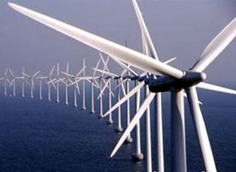
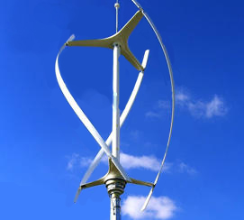
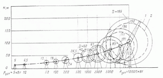

Типы ветрогенераторов

Разработано большое количество ветрогенераторов. В зависимости от
ориентации оси вращения по отношению к направлению потока
ветрогенераторы могут быть классифицированы следующим образом (рисунок
1-3):
• с горизонтальной осью вращения, параллельной направлению ветрового потока;
• с горизонтальной осью вращения, перпендикулярной направлению ветра (подобные водяному колесу);
• с вертикальной осью вращения, перпендикулярной направлению ветрового потока.

Более современный и эффективный тип – ортогональные ветрогенераторы, для работы которых достаточно скорости ветра 0,7-0,8 м/с. Отличные эксплуатационные характеристики, бесшумное вращение ротора, интересный дизайн делают ортогональные ветрогенераторы выгодным приобретением. Вы можете посмотреть видеоролик одноярусной трёхлепестковой роторной ветроустановки по ссылке. rotornaya_veu_1_yarus_0001.wmv видеосъёмка сделана при скорости ветра на уровне ротора 1,7 м./сек.
{kind=link}

{kind=link}
Ветрогенераторы с горизонтальной осью вращения
Ветроколесо может быть выполнено с различным количеством лопастей; от однолопастных ветрогенераторов с контргрузами до многолопастных (с числом лопастей до 50 и более). Ветроколеса с горизонтальной осью вращения выполняют иногда фиксированными по направлению, т.е. они не могут вращаться относительно вертикальной оси, перпендикулярной направлению ветра. Такой тип ветрогенераторов используется лишь при наличии одного, господствующего направления ветра. В большинстве же случаев система, на которой укреплено ветроколесо (так называемая головка), выполняется поворотной, ориентирующейся по направлению ветра. У малых ветрогенераторов как правило применяются для этой цели хвостовые оперения, у больших - ориентацией управляет электроника.
Для ограничения частоты вращения ветроколеса при большой скорости ветра используется ряд методов, в том числе установка лопастей во флюгерное положение, использование клапанов, установленных на лопастях или вращающихся вместе с ними, а также устройства для вывода ветроколеса из-под ветра с помощью бокового плана, расположенного параллельно плоскости вращения колеса.
Лопасти могут быть непосредственно закреплены на валу генератора, или же вращающий момент может передаваться от его обода через вторичный вал к генератору, или другой рабочей машине.
Из рисунка 4 видно, как установленная мощность Руст, развиваемая ветроколесом с горизонтальной осью вращения, зависит от его размеров.
{kind=link}

Рис.4. Мощности ветрогенераторов различных размеров при скорости ветра 7,6 м/с
Перпендикулярное направление действия ветра на установки с горизонтальной осью вращения оказалось малоэффективным, так как также требует использования систем ориентации и сравнительно сложных методов съема мощности, что ведет к потере их эффективности. Они не имеют преимуществ по сравнению с другими типами ветродвигателей с горизонтальной и вертикальной осью вращения.
К таким установкам относятся устройства с пластинами, чашеобразными или турбинными элементами, а также роторами Савониуса с лопастями S-образной формы, на которые действует также и подъемная сила. Устройства такого типа обладают большим начальным моментом, однако меньшими быстроходностью и мощностью по сравнению с обычным ротором.
В 1920 г. во Франции Дарье предложил новый тип ротора, интенсивной разработкой которого начали заниматься с 1970 г. Сейчас ветрогенератор Дарье может рассматриваться в качестве основного конкурента ветрогенераторов крыльчатого типа.
Ротор Дарье относится к ветрогенераторам, использующим подъемную силу, которая появляется на выгнутых лопастях, имеющих в поперечном сечении профиль крыла. Ротор имеет сравнительно небольшой начальный момент, и большую быстроходность, в силу этого - относительно большую удельную мощность, отнесенную к его массе или стоимости. Такие роторы имеют различную форму (?-, ?-, ?- и ромб-образную) с одной, двумя или большим числом лопастей.
Крылья пропеллера должны быть легкими и в то же время достаточно прочными. Они делаются из дерева, стали или искусственных материалов - таких как фиберглас.
Современные ветрогенераторы конечно, более производительны чем ветряки. Количество вырабатываемого ими электричества зависит от силы ветра и площади лопастей пропеллеров. Например, увеличивая вдвое площадь лопастей, можно получить вчетверо больше электричества.
Ветровая электростанция, какой бы мощности она ни была, состоит примерно одинаково: мачта (производители предлагают несколько типов: попроще на растяжках, телескопические, монолитные - разница в занимаемой площади и цене), на вершине которой устанавливается контейнер с генератором и редуктором. Редуктор вооружен лопастями, улавливающими потоки ветра. Контейнер закреплен подвижно и способен разворачиваться вслед за ветром.